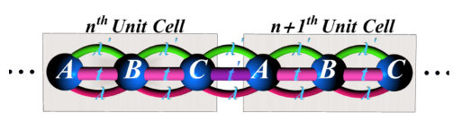

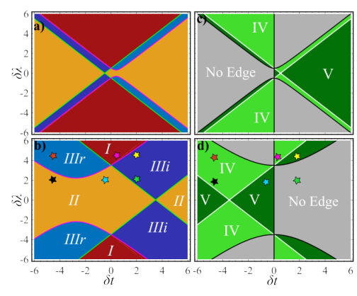
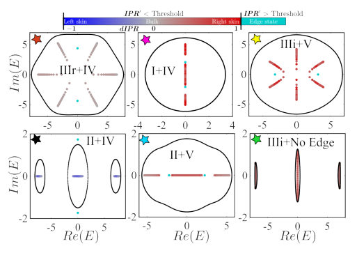
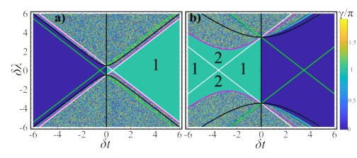
← Index · ← Previous · Next →
Authors: Jun Shu, Jun Shen, Yanmin Zhang, Hong Du, Qingsong Wang, Zeyuan Wang, Bin Wang, Zeliang Xu, Dengjing Wang, Hengfu Lin, Zunming Lu, Lei Qin, Jie Yuan, Jinbo Peng, Zhida Song, Fedor V Kusmartsev, Anna Kusmartseva, Kui Jin, Ruidan Zhong, Ge He
Type: both · Category: strongly correlated electrons · PDF: https://arxiv.org/pdf/2608.21250v1
Analysis basis: full PDF text, analyzed in chunks
Topic relevance: Frenkel-Kontorova 1/5 · analog quantum simulation 1/5 · correlated / nonlocal dissipation 1/5 · driven-dissipative phase transition 1/5 · quantum measurements 1/5
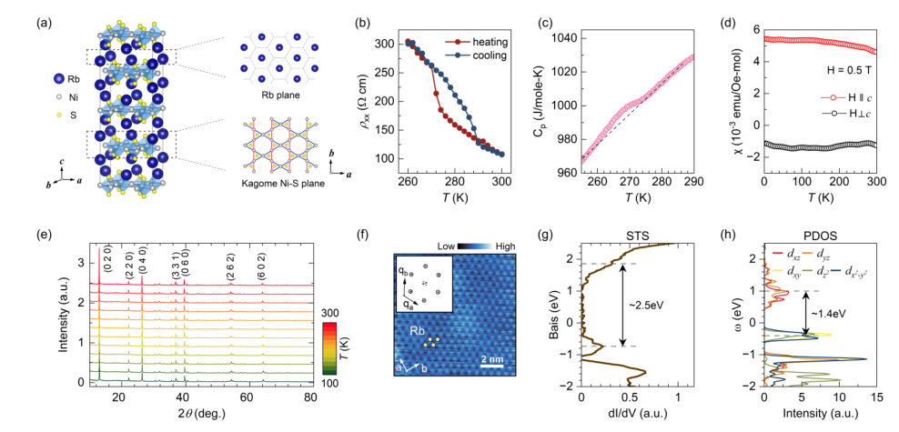
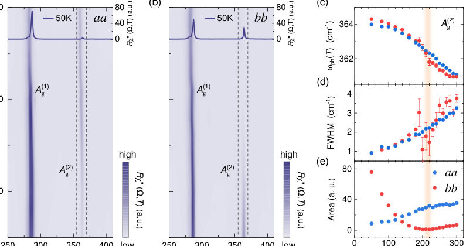
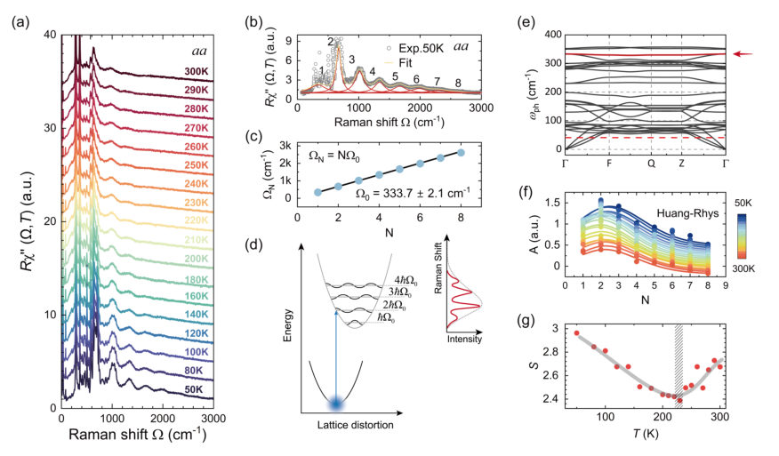
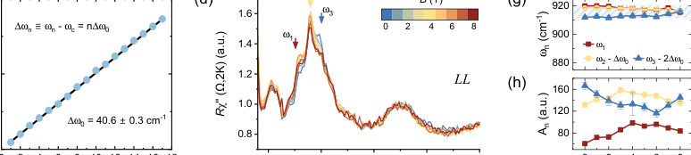
Summary. This work investigates the unconventional insulating transition in Rb2Ni3S4 by focusing on electron-phonon coupling in the regime of localized phonons. By analyzing complex Raman spectra, the authors demonstrate that the transition is driven by vibronic self-trapping, suggesting that localized lattice vibrations play a crucial role in the material's correlated electronic state.
Why it may be interesting. The strong coupling between electronic localization and lattice vibrations, particularly when mediated by localized phonons, provides a concrete example of how lattice dynamics can drive correlated electronic phases, relevant to open quantum systems modeling.
Main problem. Investigating electron-phonon coupling in the regime where the relevant phonon mode is localized or weakly dispersive, contrasting with conventional models involving dispersive lattice vibrations.
Main result. The insulating transition in Rb2Ni3S4 is attributed to vibronic self-trapping involving a localized lattice coordinate, rather than conventional structural or magnetic ordering.
Method. The study combines multiple experimental techniques, including polarization-resolved Raman spectroscopy, temperature-dependent X-ray diffraction, STM, and transport measurements.
Model / system. The physical system is the kagome compound Rb2Ni3S4, which undergoes an unconventional insulating transition near 260-280 K. The analysis focuses on the strong coupling between electronic excitations and localized lattice vibrations.
Key observables. Giant Franck-Condon progression associated with a nearly dispersionless phonon, and a characteristic comb-like fine structure with a spacing of 40.6 cm-1.
Important parameters / regimes. The transition temperature T* (260-280 K); the phonon frequency (333.7 cm-1); the fine structure spacing (40.6 cm-1); the Huang-Rhys factor (S approx 2.9).
Assumptions / limitations. The nested coexistence of the progression and the comb structure is interpreted as evidence for a strongly coupled electron–vibrational manifold.
Figures summary. Figures show temperature dependence of resistivity, Raman spectra (revealing progressions and fine structure), and phonon frequency/linewidth changes across the transition temperature.
Paper structure. The paper first establishes the unconventional nature of the insulating transition using multiple probes (transport, structural, electronic). It then uses Raman spectroscopy to analyze the phonon response, fitting the overtones to the Huang-Rhys model, and finally interprets the combined spectral features as evidence for vibronic self-trapping.
Electron-phonon coupling is usually understood in terms of electronic quasiparticles interacting with dispersive lattice vibrations. Much less is known about the complementary limit in which the relevant phonon mode is itself localized or weakly dispersive. Here we investigate this regime in the kagome compound Rb$_{2}$Ni$_{3}$S$_{4}$, which undergoes an unconventional insulating transition near $T^{*} \approx$ 260-280~K. Combining polarization-resolved Raman spectroscopy with temperature-dependent x-ray diffraction, scanning tunneling microscopy, and electrical, thermal, and magnetic measurements, we show that the transition involves electronic localization without a conventional structural or magnetic order parameter. Raman spectra reveal a giant Franck-Condon progression associated with a nearly dispersionless 333.7~cm$^{-1}$ phonon, decorated by an equally spaced comb-like fine structure with a characteristic spacing of 40.6~cm$^{-1}$. The comb spacing is insensitive to magnetic field, whereas its spectral weight is strongly field tunable. Rather than treating either hierarchy alone as pure phonon effect, we interpret their nested coexistence as evidence for a strongly coupled electron-vibrational manifold involving a localized lattice coordinate. These results identify dispersionless phonons as an active route to vibronic correlations in solids and suggest that such electron-vibrational self-trapping is closely associated with the insulating phase of Rb$_{2}$Ni$_{3}$S$_{4}$.
Authors: N. Ahmadiniaz, C. Kohlfürst, R. Shaisultanov, R. Schützhold
Type: theory · Category: other · PDF: https://arxiv.org/pdf/2608.21361v1
Analysis basis: full PDF text, analyzed in chunks
Topic relevance: Keldysh / 2PI / non-Gaussian methods 1/5 · interference shaping light 1/5 · quantum measurements 1/5
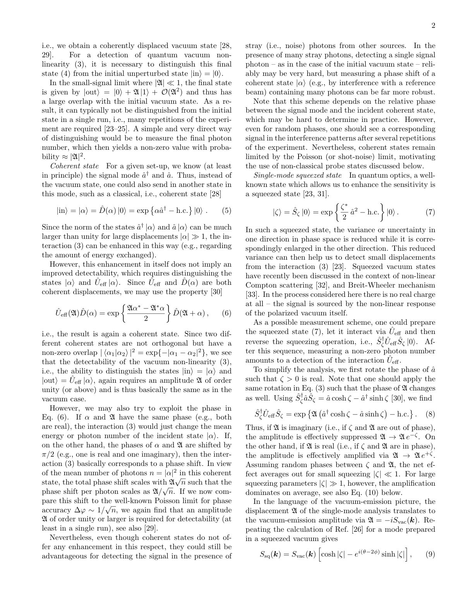
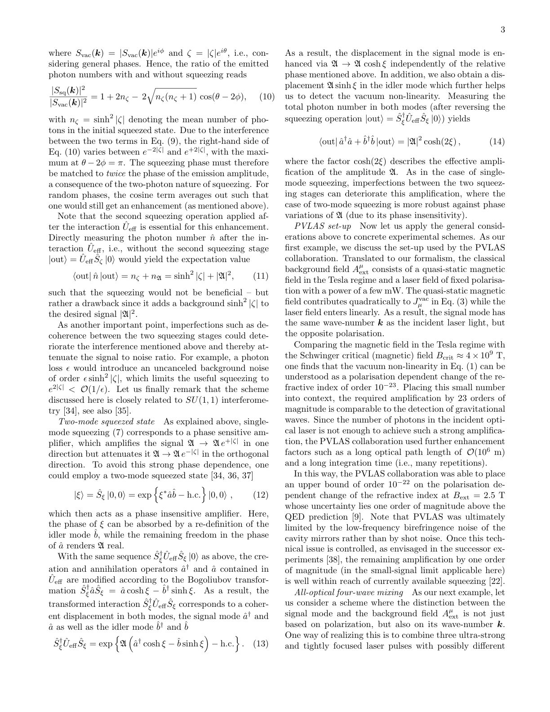
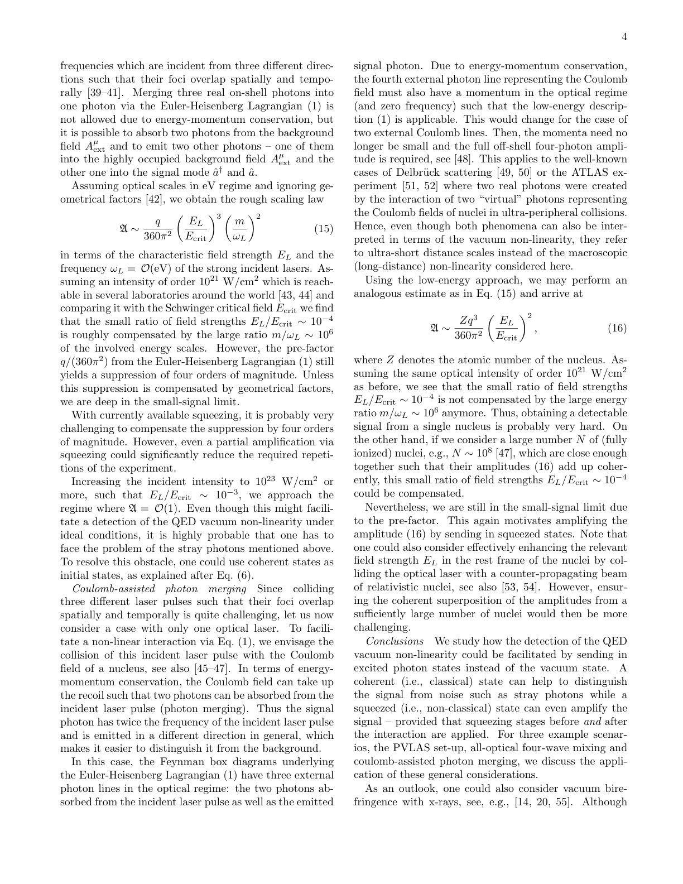
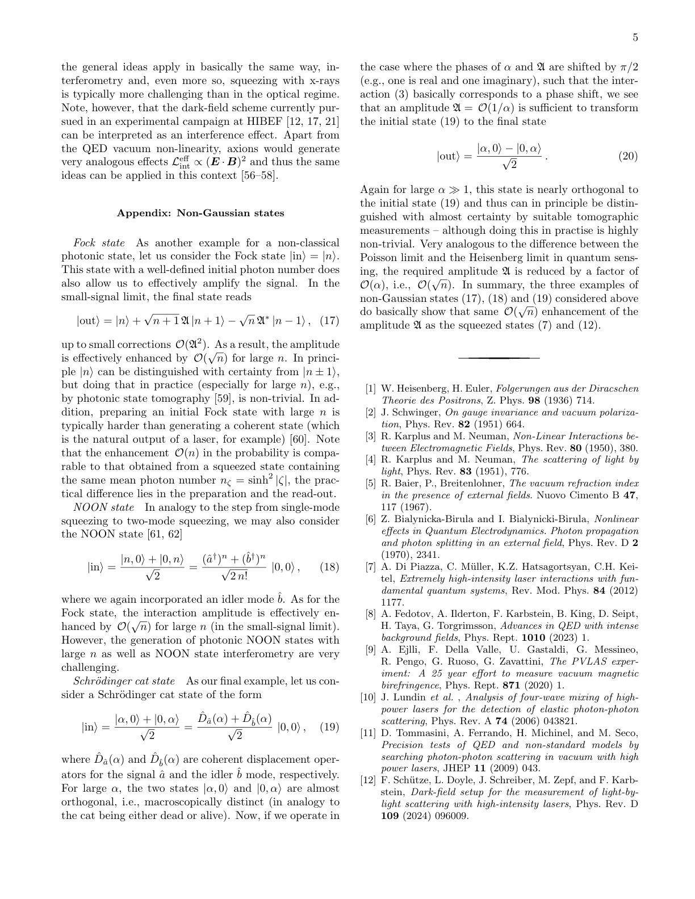
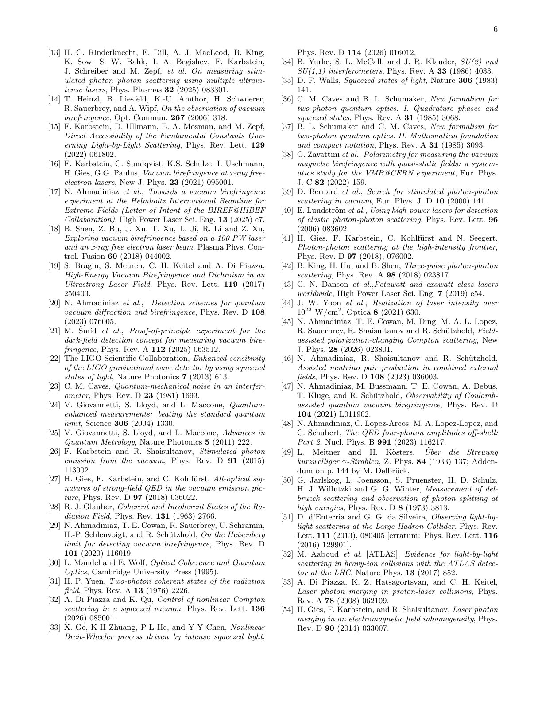
Summary. This paper analyzes methods to detect the non-linear response of the quantum vacuum predicted by QED. It demonstrates that replacing the vacuum input state with non-classical states, particularly squeezed states, significantly boosts the measurable signal. The findings guide experimental efforts toward quantum-enhanced measurements of fundamental constants.
Why it may be interesting. This work is highly relevant to quantum optics and open quantum systems, as it explores using quantum resources (squeezing, multi-photon states) to probe fundamental physics beyond the standard quantum limit. The techniques discussed are central to quantum metrology.
Main problem. The paper addresses the fundamental challenge of detecting the vacuum non-linearity predicted by Quantum Electrodynamics (QED). It investigates how using non-classical input states can enhance the detectability of this tiny effect.
Main result. Using non-classical states, such as squeezed states, significantly improves the detectability of vacuum non-linearity compared to using the initial vacuum state or coherent states alone. The enhancement depends critically on matching the squeezing phase to the interaction phase.
Method. The analysis involves calculating the evolution of quantum states (vacuum, coherent, squeezed) under an effective Hamiltonian derived from the Euler-Heisenberg Lagrangian. Comparisons are made between different input states and experimental setups.
Model / system. The system is the QED vacuum, modeled using the lowest-order Euler-Heisenberg Lagrangian. The detection mechanism involves sending an input photon state (vacuum, coherent, or squeezed) through a region exhibiting vacuum non-linearity.
Key observables. Photon number expectation values ($\langle ext{out} | \hat{n} | ext{out} angle$), phase shifts, and the ratio of emitted photon numbers.
Important parameters / regimes. The coupling constant $\xi$, the squeezing parameter $|\zeta|$, and the interaction amplitude $|A|$. The analysis is often performed in the small-signal limit.
Assumptions / limitations. The analysis assumes the ability to perform post-interaction squeezing operations ($\hat{S}^\dagger_\zeta$) and relies on small-signal approximations for the interaction strength.
Figures summary. Not specified in the notes.
Paper structure. The paper systematically compares detection schemes: first, using the vacuum state; second, using coherent states; and third, employing squeezed states. It then extends the discussion to various experimental platforms like PVLAS and four-wave mixing, analyzing the scaling laws for signal enhancement in each case.
Quantum electrodynamics (QED) predicts that the vacuum should behave as a non-linear medium. For many schemes aimed at verifying this fundamental prediction, the signal consists of one or more photons in a certain mode (determined by polarization $σ$ and wave-number $\boldsymbol{k}$) which would be empty in the absence of a QED vacuum non-linearity. Here we consider modifying these schemes by sending in a classical or non-classical (e.g., squeezed) photon state instead of the initial vacuum state in that mode. We find that the detectability can be improved significantly.
Authors: Zehou Li, Shenda He, Pan Zhou, Baoru Pan, Rui Tan, Lizhong Sun
Type: theory · Category: other · PDF: https://arxiv.org/pdf/2608.20724v1
Analysis basis: full PDF text, analyzed in chunks
Topic relevance: Keldysh / 2PI / non-Gaussian methods 1/5 · analog quantum simulation 1/5 · quantum measurements 1/5
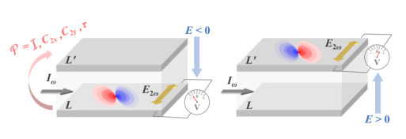
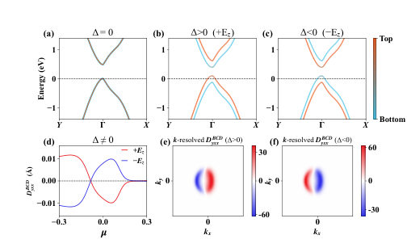
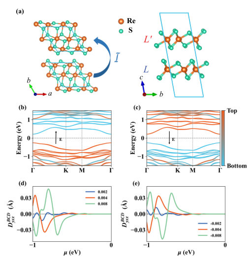
Summary. This theoretical work predicts the existence of a switchable layer nonlinear Hall effect (LNHE) in bilayer quantum materials lacking linear Hall response. The effect is intrinsically hidden by layer symmetry but can be unmasked by an out-of-plane electric field ($E_z$). The study uses symmetry analysis and k.p models to show that this nonlinear response is a universal probe of layer-resolved quantum geometry.
Why it may be interesting. While the core physics is condensed matter transport, the reliance on symmetry analysis and the concept of 'hidden' responses activated by external fields (like $E_z$) shares conceptual overlap with controlling quantum states in engineered quantum systems.
Main problem. The paper aims to predict and understand the layer nonlinear Hall effect (LNHE) in bilayer nonmagnetic or antiferromagnetic systems, especially when the linear Hall conductivity vanishes.
Main result. The LNHE is predicted to be a switchable, macroscopic nonlinear response activated by an out-of-plane electric field ($E_z$), which breaks layer-exchange symmetry.
Method. The study employs systematic symmetry analysis of layer groups, combined with minimal k.p models and tight-binding Hamiltonians to derive the necessary symmetry constraints.
Model / system. The system is a stacked bilayer of nonmagnetic or antiferromagnetic materials (e.g., $1T'- ext{WTe}_2$ or $1T'- ext{ReS}_2$). The physics is modeled using a Hamiltonian incorporating interlayer coupling and an out-of-plane electric field ($E_z$) that introduces a potential difference ($\Delta$).
Key observables. The key observable is the nonlinear Hall conductivity ($\sigma_{xy}^{ ext{NL}}$), which is predicted to exhibit an opposite sign upon reversal of the applied $E_z$.
Important parameters / regimes. The out-of-plane electric field ($E_z$) is the critical parameter that breaks symmetry and activates the response. The vanishing linear Hall conductivity is the prerequisite condition.
Assumptions / limitations. The analysis assumes that the low-energy physics can be captured by the minimal k.p model, and that the effect originates from geometric dipole mechanisms (Berry curvature dipole, etc.).
Figures summary. Figures illustrate the switchable nature of the response using band structures for $\Delta=0$, $\Delta>0$, and $\Delta<0$, confirming the sign reversal of the BCD components with field reversal.
Paper structure. The paper establishes the theoretical framework by analyzing layer-exchange symmetry leading to cancellation at $\Delta=0$. It then details how $E_z$ breaks this symmetry, enabling the LNHE via mechanisms like the Berry curvature dipole. Finally, it confirms these predictions using symmetry analysis and first-principles calculations on specific material examples.
Nonlinear Hall effects provide a powerful probe of quantum geometry in solids and enable rectification phenomena beyond the constraints of linear response. In this Letter, we predict a \emph{layer nonlinear Hall effect} (LNHE) in stacked bilayer systems composed of nonmagnetic or antiferromagnetic materials with a vanishing linear Hall conductivity. In such systems, the second- or third-order nonlinear Hall responses are intrinsically layer odd: the contributions from the two constituent layers have equal magnitude but opposite sign, resulting in exact cancellation under layer-exchange symmetry. An out-of-plane electric field $E_z$ can break this symmetry, thereby unveiling the hidden response and converting it into a switchable macroscopic nonlinear Hall signal. Using a minimal $k\!\cdot\!p$ model, we demonstrate that the LNHE can originate from the Berry curvature dipole mechanism. A systematic symmetry analysis of all 80 layer groups further yields a complete classification of the symmetry constraints and stacking configurations that allow for this type of LNHE. Beyond this mechanism, additional symmetry analysis reveals that LNHE may also arise from quantum metric dipole or inversed mass dipole. Remarkably, even in cases where second-order nonlinear Hall responses are symmetry forbidden, a third-order LNHE can still survive in certain stacked bilayer configurations. First-principles calculations on representative bilayers---nonmagnetic 1T$'$-WTe$_2$ and 1T$'$-ReS$_2$---explicitly demonstrate electrically reversible second-order LNHE, in full agreement with our symmetry-based predictions. Overall, our results establish LNHE as a universal phenomenon in a wide range of layered quantum materials and provide a robust route toward electrically tunable nonlinear transport.
Authors: Milad Jangjan, Linhu Li, Longwen Zhou, Mir Vahid Hosseini
Type: theory · Category: other · PDF: https://arxiv.org/pdf/2608.20520v1
Analysis basis: full PDF text, analyzed in chunks
Topic relevance: Frenkel-Kontorova 1/5 · driven-dissipative phase transition 1/5




Summary. This theoretical study investigates non-Hermitian topology in a trimerized SSH chain incorporating nonreciprocal Rashba SOC. By exploiting spin-flip symmetry, the authors map out a complex phase diagram characterized by $\mathcal{PT}$ and anti-$\mathcal{PT}$ symmetry transitions. The work successfully establishes a bulk-edge correspondence, showing how symmetry dictates whether edge states possess real or imaginary energies.
Why it may be interesting. This work is highly relevant as it extends the study of topological phases into the non-Hermitian domain, specifically addressing how $\mathcal{PT}$ and anti-$\mathcal{PT}$ symmetries dictate the nature of edge states in complex lattice models.
Main problem. The paper investigates $\mathcal{PT}$ and anti-$\mathcal{PT}$ phase transitions in a specific quantum system, focusing on spin-resolved non-Hermitian topology and edge-selective symmetry preservation.
Main result. The system exhibits a rich phase diagram with distinct bulk and edge-state phases, demonstrating spin-dependent non-Hermitian skin effects and the separation of symmetry classes between bulk and edge states.
Method. The analysis employs non-Bloch band theory and Cardano's method to derive closed-form expressions for phase boundaries, confirming results using Berry phase and directional inverse participation ratios.
Model / system. The model is a one-dimensional trimerized Su--Schrieffer--Heeger (SSH) chain with three sublattices per unit cell, subjected to a nonreciprocal Rashba spin-orbit coupling. The Hamiltonian is decomposed into two independent spin sectors due to a preserved spin-flip symmetry.
Key observables. Bulk and edge energy spectra (real/imaginary), Berry phase, directional inverse participation ratios, and the classification of phases (e.g., $\mathcal{PT}$-unbroken, anti-$\mathcal{PT}$-unbroken).
Important parameters / regimes. Intracell ($t$) and intercell ($t'$) hopping amplitudes, dimerization strength ($\delta t$), and nonreciprocal Rashba coupling ($\lambda, \lambda'$ with $\delta\lambda$).
Assumptions / limitations. The analysis relies on the existence of a spin-flip symmetry, which allows the Hamiltonian to be block-diagonalized into two independent spin sectors.
Figures summary. Figure 1 schematically illustrates the $\text{SSH}3$ lattice couplings. Figure 2 (mentioned) shows the phase diagram in the $(\delta t, \delta \lambda)$ plane for both spin sectors.
Paper structure. The paper proceeds by defining the Hamiltonian and exploiting the spin-flip symmetry to decompose the problem. It then uses non-Bloch theory to analyze the bulk spectrum via a cubic secular equation, followed by edge state analysis to establish the bulk-edge correspondence for different symmetry regimes.
We theoretically investigate a one-dimensional trimerized Su--Schrieffer--Heeger chain with three sublattices per unit cell subjected to a nonreciprocal Rashba spin-orbit coupling. Invoking a spin-flip symmetry, the non-Hermitian Hamiltonian decomposes into two independent spin sectors, enabling a spin-resolved analysis of non-Hermitian skin effects and system symmetries. We identify a rich phase diagram consisting of four bulk phases and two edge-state phases. The bulk phases include fully $\mathcal{PT}$-unbroken (real-spectrum) and fully anti-$\mathcal{PT}$-unbroken (imaginary-spectrum) regimes, as well as two mixed phases where one band remains on the real or imaginary axis while the other two form complex-conjugate pairs. The two edge-state phases correspond to topological edge modes with either $\mathcal{PT}$-unbroken (real) or anti-$\mathcal{PT}$-unbroken (imaginary) energies. Using non-Bloch band theory and Cardano's method, we derive closed-form expressions for phase boundaries and establish the bulk-edge correspondence for each spin sector. Calculations of Berry phase and directional inverse participation ratios confirm our analytical predictions. Our results provide a minimal platform for realizing spin-resolved non-Hermitian topology and edge-selective symmetry preservation, in which the bulk and edge states belong to distinct symmetry classes.
Authors: Zhipeng Liang, Xuan Wang
Type: theory · Category: quantum information and computing · PDF: https://arxiv.org/pdf/2608.20775v1
Analysis basis: full PDF text, analyzed in chunks
Topic relevance: analog quantum simulation 1/5 · quantum measurements 1/5
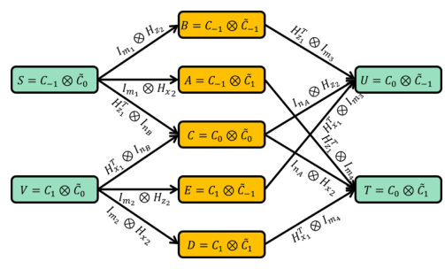
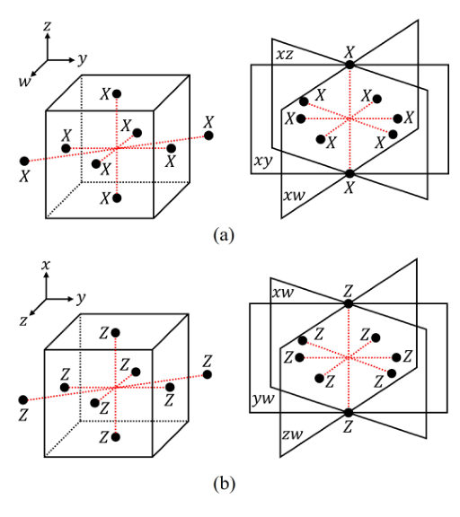
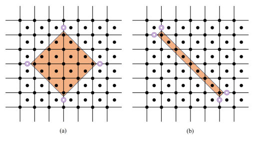
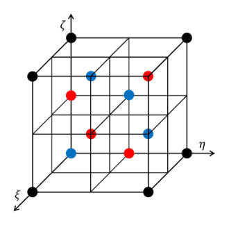
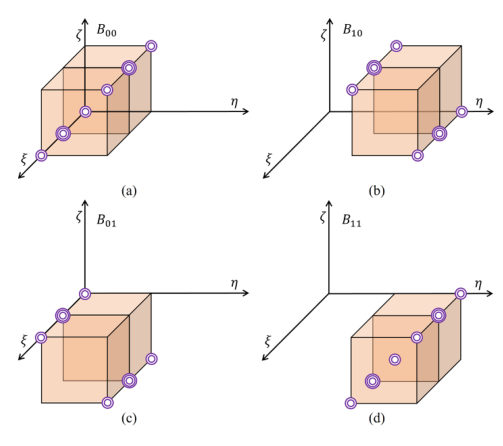
Summary. This paper analyzes the 4D Chamon code, a complex quantum error-correcting code, confirming its structure and restricted-mobility excitations. The authors introduce a novel, efficient two-layer decoding strategy that leverages the code's underlying symmetries. This new decoder significantly outperforms state-of-the-art methods in numerical simulations, advancing the practical application of topological quantum memory.
Why it may be interesting. The work provides a concrete, advanced example of applying deep structural insights (hyperplane symmetry, projection) to improve quantum error correction decoding, which is highly relevant to building fault-tolerant quantum hardware.
Main problem. To characterize the 4D Chamon code, confirm its status as a 4D generalization of the 3D code, and develop a high-performance decoding strategy.
Main result. The paper develops a novel two-layer decoding strategy that exploits the code's intrinsic symmetries, achieving substantially better decoding accuracy than existing methods like BP-OSD.
Method. The authors establish the code's algebraic structure, analyze its restricted-mobility excitations, and then decompose the complex decoding problem into multiple independent, parallelizable 2D toric-code-like subproblems.
Model / system. The system is the 4D Chamon code, a type of fracton model constructed via the 4D XYZ product of two 2D toric codes, defined on a 4D periodic lattice.
Key observables. Ground-State Degeneracy (GSD), restricted-mobility excitations (monopoles and dipoles), and the logical error rate during decoding.
Important parameters / regimes. The dimensionality (4D), the type of noise (Pauli Z errors), and the comparison metric (decoding accuracy vs. BP-OSD).
Assumptions / limitations. The core decoding strategy relies on separating the error components, particularly the mixed-face error ($\mathbf{e}_{ ext{mix}}$), which allows the problem to decompose into independent 2D subproblems.
Figures summary. Figure 9 compares the logical error rates of the proposed two-layer decoder against BP-OSD for 4D Chamon codes under pure Pauli Z noise, showing superior performance for the new decoder.
Paper structure. The paper first characterizes the code and its excitations, confirming its 4D generalization status. It then develops the decoding theory by identifying structural symmetries, leading to the proposal of a two-layer decoding algorithm that solves the projected equation first, followed by parallel decoding on the remaining components.
Fracton models have attracted considerable interest as candidates for quantum memories because of their unconventional ground-state degeneracy (GSD) and restricted-mobility excitations. The four-dimensional (4D) Chamon code introduced in our previous work is constructed via the 4D XYZ product of two two-dimensional (2D) toric codes. Its GSD grows exponentially with the system size, similar to that of the three-dimensional (3D) Chamon code, suggesting that it may be regarded as a 4D generalization of the 3D Chamon code. However, the excitation properties of the 4D Chamon code have not been studied in depth, and a high-performance decoding strategy is still lacking. In this work, we first establish the correspondence between the algebraic structure of the 4D Chamon code and the 4D lattice, thereby characterizing the geometric distributions of qubits and stabilizers. Second, we show that the 4D Chamon code supports three types of restricted-mobility excitations analogous to those of the 3D Chamon code, further supporting its interpretation as a 4D generalization of the 3D Chamon code. Finally, we uncover two structural properties relevant to decoding: a hyperplane symmetry and a projection-induced 2D toric-code structure. By exploiting these properties, we develop a two-layer decoding strategy that decomposes the original decoding problem into multiple independent and parallelizable subproblems. Numerical simulations show that the proposed decoder substantially outperforms BP-OSD in decoding accuracy, demonstrating the benefit of incorporating the intrinsic geometric and algebraic structures of the code into decoder design.
Authors: Keshav Singh, Juan Felipe Mendez-Valderrama, Erez Berg, B. Andrei Bernevig, Oskar Vafek
Type: theory · Category: strongly correlated electrons · PDF: https://arxiv.org/pdf/2608.20694v1
Analysis basis: full PDF text, analyzed in chunks
Topic relevance: analog quantum simulation 1/5
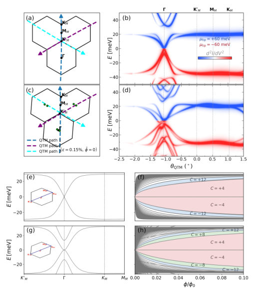
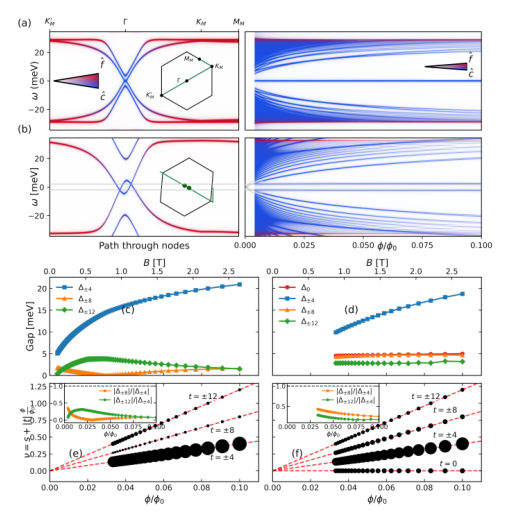
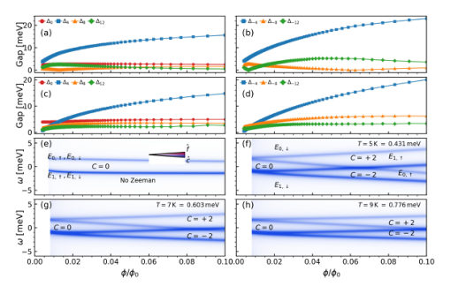
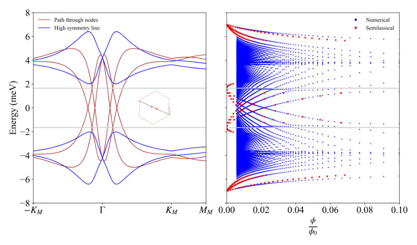
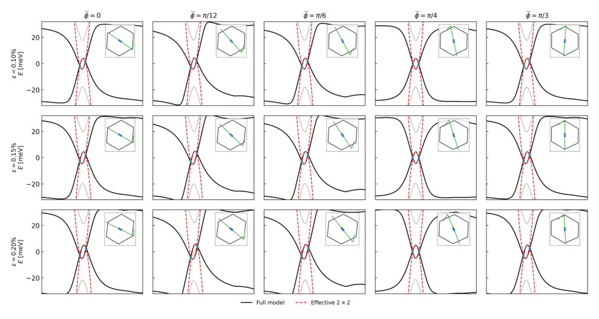
Summary. This theoretical work distinguishes between Mott and strain-induced semimetallic phases in twisted bilayer graphene by analyzing their response to an out-of-plane magnetic field. The key diagnostic tool is the gap size hierarchy observed in the Landau levels. The distinct, robust hierarchy predicted for the strain-induced state, compared to the field-sensitive hierarchy of the Mott state, offers a pathway for experimental verification.
Why it may be interesting. The work provides a concrete, measurable spectroscopic signature (the gap hierarchy) that can differentiate between two complex, correlated quantum phases in a highly tunable solid-state system, which is relevant for understanding emergent topological phases.
Main problem. The paper aims to provide a sharp, spectroscopic criterion to distinguish between two candidate electronic states in magic-angle twisted bilayer graphene (MATBG): a 'Mott semimetal' governed by strong correlations, and a 'strain-induced anisotropic semimetal' characterized by weak Hartree-Fock effects.
Main result. The out-of-plane magnetic field serves as a definitive probe: the strain-induced semimetal exhibits a robust gap hierarchy ($\Delta_{\pm 4} > \Delta_{\pm 8} > \Delta_{\pm 12}$), while the Mott semimetal shows a different, field-dependent hierarchy for its higher-order gaps.
Method. The analysis involves calculating the expected Landau level (LL) gap size hierarchy using the Topological Heavy Fermion (THF) framework, comparing results derived from the Hubbard-I approximation (Mott) versus single-particle strained Hamiltonians.
Model / system. The physical system is MATBG, modeled using the THF framework. The study compares the behavior of the Mott state (using Hubbard-I) against the strain-induced state (using $ ext{H}_{ ext{strain}}$) under the influence of an out-of-plane magnetic field.
Key observables. Landau level gap size hierarchy ($\Delta_C$), specifically comparing $\Delta_{\pm 4}, \Delta_{\pm 8}, \Delta_{\pm 12}$ gaps.
Important parameters / regimes. Out-of-plane magnetic field ($B$), strain ($\epsilon$), and interaction strength ($U_1$).
Assumptions / limitations. The analysis often relies on the flat-chiral limit ($v'_* = M = 0$) for the Mott semimetal to achieve solvable spectra, though extensions include lattice relaxation and Zeeman coupling.
Figures summary. Figures illustrate QTM paths and expected $d^2I/dV^2$ maps for both candidates, and show the evolution of Chern gaps ($\Delta_C$) as a function of magnetic flux and various physical parameters.
Paper structure. The paper develops the theoretical framework by first establishing the diagnostic tool (LL spectroscopy) and then performing detailed calculations comparing the gap evolution for the Mott state versus the strain-induced state under varying external fields and internal symmetries.
Recent quantum twisting microscopy experiments [1] have provided unprecedented momentum- and energy-resolved imaging of magic-angle twisted bilayer graphene, revealing a stark dichotomy between the heavy and light electronic characters of its narrow bands. In this work, we provide a sharp distinguishing criterion between the two most likely candidate states that exhibit spectroscopic features consistent with the experimental results. Focusing on charge neutrality, these states are 1) the 'Mott semimetal', governed by strong dynamical correlations, and 2) the 'strain-induced anisotropic semimetal', characterized by weak Hartree-Fock effects. We demonstrate that an out-of- plane magnetic field serves as a sharp discriminating probe based on the expected Landau level gap size hierarchy. We find that the strain-induced anisotropic semimetal has a robust gap hierarchy where the Chern C gaps, Δ_C , decrease in order Δ_{\pm 4} > Δ_{\pm 8} > Δ_{\pm 12}. In contrast, for the Mott semimetal, Δ_{\pm 4} remains the largest gap, while the relative magnitude of the C = \pm 8, \pm 12 gaps depends sensitively on the applied magnetic field. We test the robustness of these results against strain orientation and lattice relaxation finding consistency between the gap hierarchy of the strained semimetal and previous incompressibility measurements at finite magnetic field [2].
Authors: Yuhang Xiao, Ning Hao
Type: theory · Category: strongly correlated electrons · PDF: https://arxiv.org/pdf/2608.20838v1
Analysis basis: full PDF text, analyzed in chunks
Topic relevance: Keldysh / 2PI / non-Gaussian methods 1/5
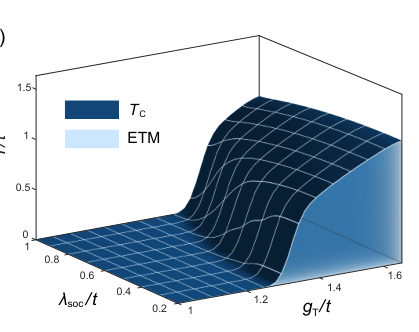
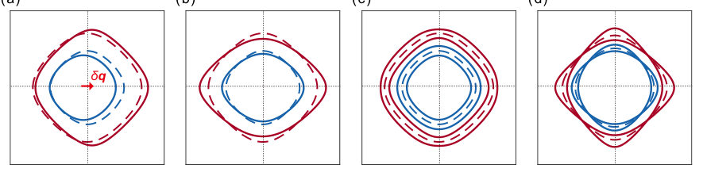
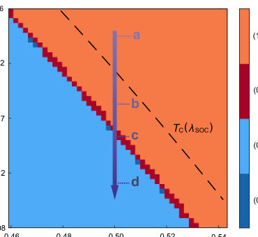
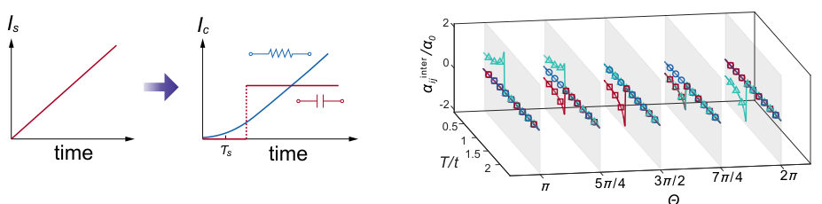
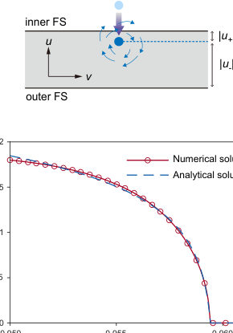
Summary. This work develops a general Landau theory for Electronic Toroidal Metals (ETM), showing how toroidal order can spontaneously arise in itinerant electron systems. The theory uses advanced projection techniques to isolate the physical instability, predicting unique signatures in the magnetoelectric response and nonlinear charge transport. It establishes ETM as a distinct metallic phase governed by Fermi-liquid instabilities.
Why it may be interesting. The concept of a higher-rank multipolar order (toroidal) emerging from itinerant electrons provides a rich theoretical framework for understanding exotic metallic phases beyond standard charge or spin ordering.
Main problem. To develop a generic theory for the electronic toroidal metal (ETM), where toroidal order spontaneously emerges from electronic degrees of freedom near the Fermi surfaces in itinerant-electron systems.
Main result. ETM is established as a distinct metallic Landau phase, characterized by a soft collective mode and a unique enhancement of nonlinear charge transport linked to pseudospin texture topology.
Method. The theory employs a projected instability criterion (Schur projection) to handle the overlap between toroidal candidates and the uniform charge current, leading to a Fermi-liquid instability analysis.
Model / system. The study focuses on itinerant electron systems, using a minimal two-band Hamiltonian on a square lattice as a prototype for spin-orbit-coupled systems.
Key observables. Antisymmetric magnetoelectric response tensor, nonlinear charge transport ($\sigma_{interQMD}$), and the continuous evolution of the toroidal moment ($T$).
Important parameters / regimes. The instability is governed by the soft mode appearing in the P-odd and T-odd particle-hole channel.
Assumptions / limitations. The primary technical hurdle addressed is the overlap of toroidal candidates with the uniform charge current, necessitating the Schur projection to select the physical instability.
Figures summary. Figures illustrate the temperature dependence of various nonlinear conductivity contributions (NLD, interQMD, intraQMD) and show the momentum-space distribution of the interband quantum metric near pseudospin vortices.
Paper structure. The paper develops the theory by first formulating the instability criterion, then using a Schur projection formalism on a minimal model to derive the effective mean-field Hamiltonian, and finally analyzing the resulting nonlinear transport signatures.
Toroidal order is a higher-rank multipolar order whose intrinsic realization in itinerant-electron systems remains unexplored. Here, we develop a generic theory of the electronic toroidal metal (ETM), in which toroidal order emerges spontaneously from electronic degrees of freedom near the Fermi surfaces. Because candidate toroidal bilinears can overlap by symmetry with the uniform charge current, we formulate a projected instability criterion that removes the noncondensable current component. Within this current-orthogonal sector, we identify a soft collective mode in the $\mathcal{P}$-odd and $\mathcal{T}$-odd particle-hole channel and demonstrate that ETM arises as a Fermi-liquid instability. We then define the toroidal moment in an itinerant system through the antisymmetric magnetoelectric response tensor. We further establish an intimate connection between this response and the topology of pseudospin texture: the rearrangement of pseudospin vortices changes the winding structure of the Fermi surfaces and markedly enhances the magnetoelectric response. ETM also exhibits characteristic nonlinear charge transport, including a pronounced enhancement of its interband quantum-geometric contribution. Our results establish ETM as a distinct metallic Landau phase and provide a general framework for understanding toroidal order generated by itinerant electrons.
Authors: Pramod Padmanabhan, Somnath Maity, Vladimir Korepin
Type: theory · Category: statistical mechanics · PDF: https://arxiv.org/pdf/2608.20714v1
Analysis basis: full PDF text, analyzed in chunks
Topic relevance: analog quantum simulation 1/5
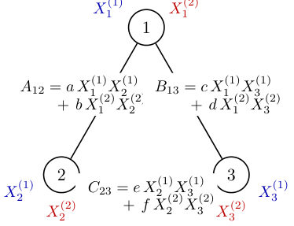
Summary. This theoretical paper constructs solutions to the non-braided scalene Yang--Baxter equation using algebraic methods based on noncommutative algebras. The key finding is the derivation of multiparameter quantum affine spaces that satisfy this relation, providing a general framework for studying quantum integrability. The results are realized explicitly using weighted and multiplicative shift operators, connecting abstract algebra to concrete physical models.
Why it may be interesting. The connection between the scalene YBE and quantum affine algebras provides a powerful, representation-independent tool for studying quantum integrability, which is crucial for understanding many-body dynamics in condensed matter systems.
Main problem. The paper focuses on constructing representation-independent families of solutions to the non-braided scalene Yang--Baxter equation (YBE). This equation governs the algebraic structure underlying quantum integrability.
Main result. The construction yields purely scalene solutions associated with multiparameter quantum affine spaces, providing an algebraic framework for investigating quantum integrability.
Method. The authors use algebraic methods, starting from quadratic noncommutative algebras and generalizing the construction from anticommuting generators to $q$-deformed algebras.
Model / system. The study concerns abstract algebraic structures, specifically quantum affine spaces and the operators satisfying the scalene YBE. Representations are realized using weighted shifts and multiplicative-shift operators acting on $\mathbb{Z}$-indexed spaces.
Key observables. The satisfaction of the scalene Yang--Baxter relation ($A_{12}B_{13}C_{23} = C_{23}B_{13}A_{12}$) and the derived cross-commutativity relation $[t_B, t_C] = 0$.
Important parameters / regimes. Deformation parameters ($q_{\mu u}^{\alpha}$ or $\lambda_\mu / \lambda_ u$), which dictate the specific quantum affine space realized.
Assumptions / limitations. The analysis assumes the existence of a basis (PBW property) for the algebra and that the initial construction can be generalized from anticommuting generators to $q$-deformed algebras.
Figures summary. Figure 1 illustrates the triangular organization of the anticommuting two-generator construction, while other figures likely detail the structure of the shift operators and the algebraic relations.
Paper structure. The paper progresses from the initial anticommuting construction of the scalene YBE solution (Theorem 2.1) to generalizing this to $q$-deformed algebras (Theorem 4.1), and finally providing explicit infinite-dimensional realizations using weighted and multiplicative shift operators (Section 6).
We construct representation-independent families of solutions of the non-braided scalene Yang--Baxter equation from quadratic noncommutative algebras. Beginning with two anticommuting generators, we obtain a continuous deformation in terms of quantum-plane algebras and extend the construction to an arbitrary number of generators. In the latter case the scalene Yang--Baxter relation fixes the multiparameter exchange matrix to an exact multiplicative form, thereby selecting a distinguished subclass of multiparameter quantum affine spaces. We construct finite-dimensional realizations using singular matrices and finite Heisenberg--Weyl operators, as well as infinite-dimensional realizations in terms of bilateral weighted shifts and multiplicative-shift operators. The explicit realizations are generically \emph{purely scalene}: although the ordered triple satisfies the scalene Yang--Baxter equation, its individual constituent operators do not satisfy the ordinary non-braided Yang--Baxter equation. These results provide a representation-independent algebraic framework for constructing Yang--Baxter-irreducible scalene triples and a starting point for investigating their possible applications to quantum integrability.
Authors: Si-Han Li, Tian-Yang Wang, Ai-Yan Tong, Shu-Min Wu
Type: theory · Category: quantum information and computing · PDF: https://arxiv.org/pdf/2608.20650v1
Analysis basis: full PDF text, analyzed in chunks
Topic relevance: correlated / nonlocal dissipation 1/5
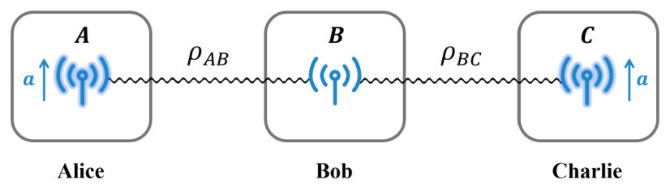
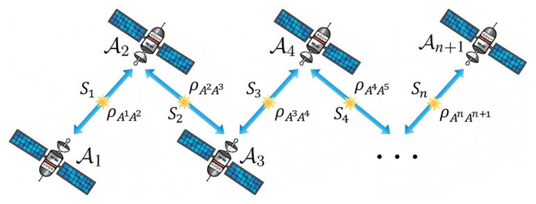
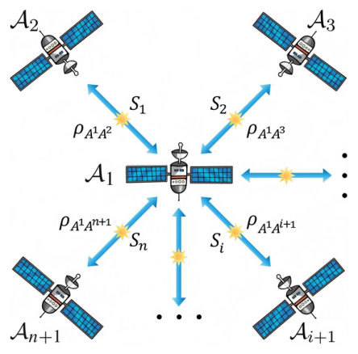
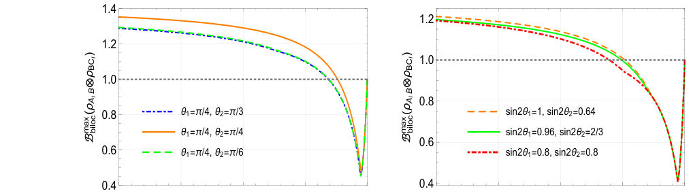
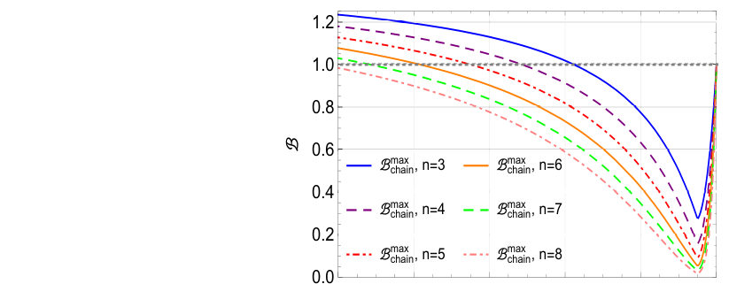
Summary. This work studies the relativistic decay of quantum network nonlocality using the Unruh-DeWitt model. It demonstrates that the network's topology dictates its resilience, showing that star configurations are significantly more robust than chain configurations under acceleration. The findings suggest that network architecture can be optimized to protect quantum correlations in relativistic quantum technologies.
Why it may be interesting. It provides a concrete theoretical framework for understanding how fundamental physical effects like acceleration (Unruh effect) impact the robustness of quantum resources like nonlocality, which is crucial for designing practical quantum communication channels.
Main problem. The paper investigates how the nonlocality of quantum correlations within a network degrades when the constituent nodes undergo relativistic motion.
Main result. The network topology critically determines the fate of nonlocality; star networks show remarkable resilience, even exhibiting a sudden death-sudden birth transition, unlike chain networks which suffer irreversible decay.
Method. The analysis uses the Unruh-DeWitt detector model and calculates the evolution of the reduced density matrix in the weak-coupling limit using first-order perturbation theory.
Model / system. The system models quantum networks (chain and star topologies) where detectors interact with a quantized field while undergoing uniform proper acceleration. The dynamics are governed by the Unruh-DeWitt Hamiltonian.
Key observables. Network nonlocality (quantified by $n$-locality inequalities, $B_{ ext{max}}$), and the reduced density matrix $ ho_{AB}^t$.
Important parameters / regimes. Acceleration parameter ($q$), coupling strength ($ u$), and network size ($n$).
Assumptions / limitations. The analysis is restricted to the weak-coupling regime and utilizes first-order perturbation theory in the Unruh-DeWitt detector framework.
Figures summary. The notes describe trends showing $B_{ ext{max}}$ vs. acceleration parameter ($q$) for different topologies, highlighting the resilience of star networks.
Paper structure. The paper systematically analyzes the evolution of nonlocality for different network structures (chain vs. star) by calculating the reduced density matrix after interaction with the accelerating quantum field.
We investigate the relativistic dynamics of network nonlocality in general $n$-local networks with chain and star topologies using the Unruh-DeWitt detector model. We show that the relativistic degradation of network nonlocality is strongly governed by the underlying topology. While chain networks suffer an irreversible sudden death of non-$n$-locality under relativistic motion, star networks exhibit remarkable resilience against relativistic decoherence. Most strikingly, a minimal star network with three peripheral nodes exhibits a remarkable sudden death-sudden birth transition of network nonlocality as the acceleration increases. This reentrant behavior reveals a dual role of the Unruh effect: it can both suppress and protect network nonlocality, offering a new perspective on the relativistic effects of acceleration on quantum networks. For larger star networks ($n>3$), non-$n$-local correlations persist over the entire acceleration regime. These insights provide valuable conceptual guidance for the structural optimization and design of acceleration-resilient architectures for future relativistic quantum communication and sensing protocols.
Authors: Arnbjörg Soffía Árnadóttir, Krystal Guo
Type: theory · Category: other · PDF: https://arxiv.org/pdf/2608.20476v1
Analysis basis: full PDF text, analyzed in chunks
Topic relevance: analog quantum simulation 1/5
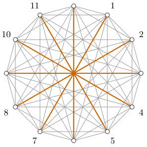
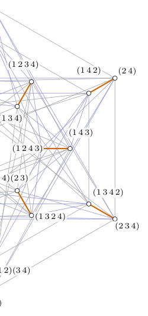
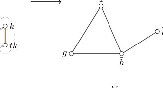
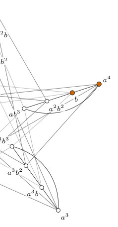
Summary. This work investigates Perfect State Transfer (PST) in quantum walks on graphs, treating it as a property of the graph structure rather than just the underlying group. The authors provide deep results linking PST to the algebraic structure of the graph's automorphism group, proving that many known examples are non-abelian presentations of abelian graphs, while also constructing new infinite families that definitively require non-abelian group structures.
Why it may be interesting. The connection between algebraic structure (group theory) and quantum dynamics (quantum walks) is highly relevant to understanding the robustness and limitations of quantum information processing on physical architectures modeled by graphs.
Main problem. The paper bridges the classical graph theory problem of isomorphic Cayley graphs with the quantum physics concept of Perfect State Transfer (PST) in quantum walks.
Main result. It establishes necessary and sufficient conditions for a non-abelian group to admit a Cayley graph with PST, and provides an infinite family of such graphs that cannot be presented as Cayley graphs of any abelian group.
Method. The analysis combines spectral graph theory (for PST detection) with advanced group theory (using theorems like Sabidussi's) to characterize the automorphism groups of the graphs.
Model / system. The model is quantum walks on graphs, where the dynamics are governed by the adjacency matrix $A$ of a graph $X$, and the physical observable is the probability amplitude for state transfer between vertices.
Key observables. Perfect State Transfer (PST) at time $ au$, defined by $|U( au)_{v,u}| = 1$, and the spectrum of the adjacency matrix $A$.
Important parameters / regimes. The order of the group $|G|$, the index of abelian subgroups, and the prime power $q$ defining the $ ext{SL}(2, q)$ graphs.
Assumptions / limitations. The analysis heavily relies on the graph being a Cayley graph $ ext{Cay}(G, S)$ and the application of theorems relating graph automorphisms to group structure.
Figures summary. The paper includes a census of connected vertex-transitive graphs with PST on at most 30 vertices, and large tables summarizing parameters, spectra, and associated Cayley groups for numerous graphs.
Paper structure. The paper proceeds by first establishing general conditions for PST in Cayley graphs, then proving results for specific families (like those related to abelian subgroups of index two), and finally constructing and analyzing infinite families of counterexamples (like the $ ext{SL}(2, q)$ graphs) to show non-abelian presentations.
We study perfect state transfer on Cayley graphs from the point of view that state transfer is a property of a graph and not of a group. This paper is a bridge between the classical question about isomorphic Cayley graphs of non-isomorphic groups and quantum walks on graphs. We show that a Cayley graph of a group with an abelian subgroup of index two is a Cayley graph of an abelian group under any one of three hypotheses, two drawn from the theory of isomorphic Cayley graphs. A statement of the same kind holds for extraspecial groups: every Cayley graph of an extraspecial $p$-group of order $p^{2n+1}$ with a conjugacy-closed connection set is a Cayley graph of $Z_p^{2n+1}$. From these results we deduce that every explicit construction of perfect state transfer in the six papers we survey, on dihedral, dicyclic, generalized dihedral, $V_{8n}$ and extraspecial $2$-groups, is a non-abelian presentation of an abelian Cayley graph. Moreover, we show that a non-abelian group with an abelian subgroup of index two admits a connected Cayley graph with perfect state transfer if and only if its order is divisible by four. Genuinely non-abelian examples do exist. We prove that, for every odd prime power $q\ge 5$, the $SL(2,q)$ graph of Pantangi and Sin, which they showed to admit perfect state transfer, is a Cayley graph of no abelian group; to our knowledge, this is the first infinite family of Cayley graphs with perfect state transfer provably admitting no abelian Cayley presentation. We also construct an infinite family of Cayley graphs with peak state transfer and determine all regular subgroups of the automorphism group of every member. An appendix records a census of the connected vertex-transitive graphs with perfect state transfer on at most $30$ vertices.
Authors: Honey Boban, Tanguy Prongué, Amarjyoti Choudhury, Dario Marchiani, Andrés Bareño, Felix Eder, Enrico Giannini, Fabian O. von Rohr, Alberto F. Morpurgo, Marco Gibertini, Anna Tamai, Felix Baumberger
Type: both · Category: strongly correlated electrons · PDF: https://arxiv.org/pdf/2608.20978v1
Analysis basis: full PDF text, analyzed in chunks
Topic relevance: Keldysh / 2PI / non-Gaussian methods 1/5
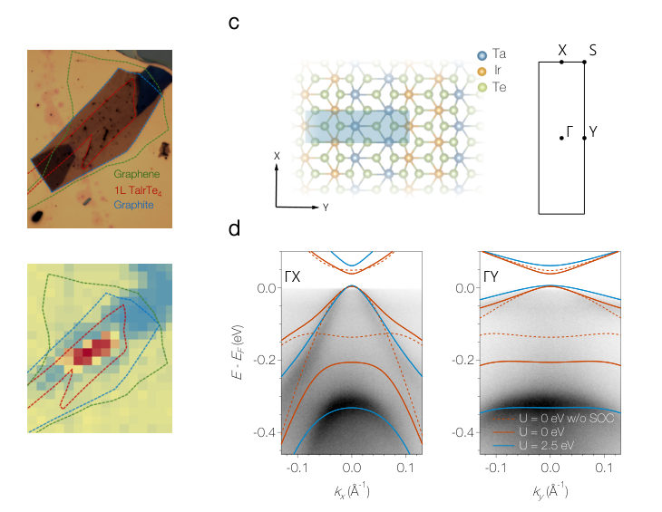
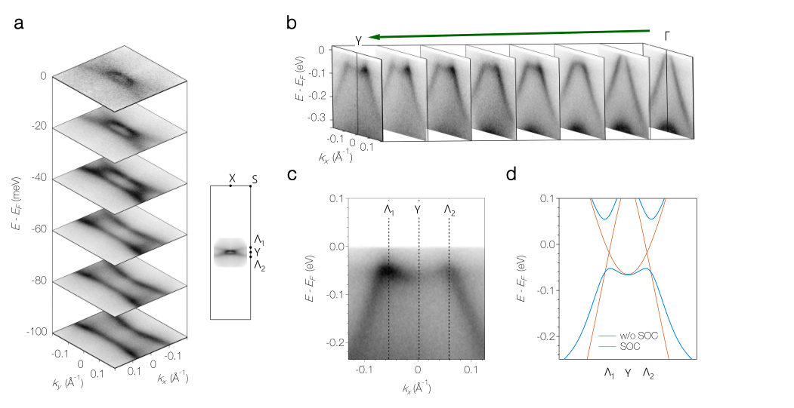
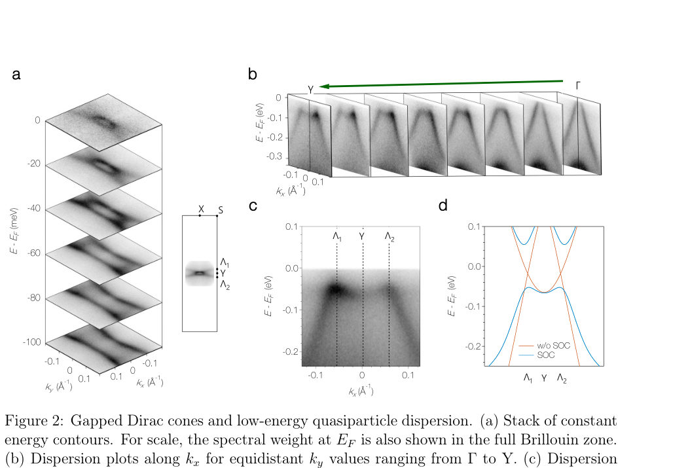
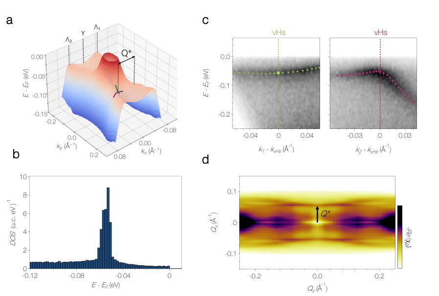
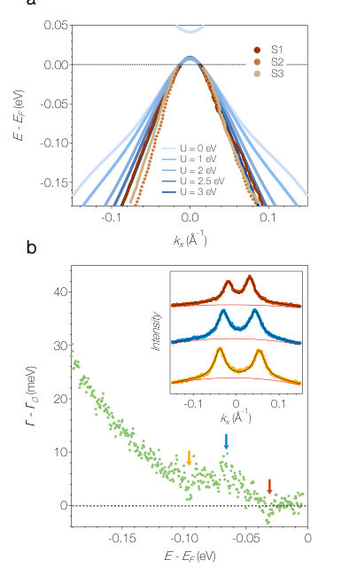
Summary. This work uses ARPES and DFT+U calculations to map the electronic structure of monolayer TaIrTe4. While the material shows topological features and Van Hove singularities, the measured quasiparticle linewidths suggest weak correlations. The authors conclude that the role of strong correlations and VHSs in driving the observed transport anomalies is likely secondary.
Why it may be interesting. The investigation into correlated insulating phases and the interplay between topological features (like Dirac points) and correlation-driven instabilities (like CDW) is central to modern condensed matter physics, relevant for understanding emergent quantum states.
Main problem. The study investigates the electronic structure of monolayer TaIrTe4, specifically addressing conflicting reports regarding quantum spin Hall insulator phases and density wave instabilities.
Main result. The ARPES data confirms a topologically non-trivial band structure, but the quasiparticle linewidths suggest weak electron correlations, pointing to a secondary role for VHSs and correlations in the transport phase diagram.
Method. The research combines advanced experimental techniques like micro-focus laser ARPES with theoretical calculations using DFT+U to model the electronic structure.
Model / system. The physical system is monolayer 1T-TaIrTe4, a layered transition metal chalcogenide. Theoretical modeling employs DFT+U to account for strong on-site Coulomb interactions on Ta and Ir d-orbitals.
Key observables. Band structure dispersion, Density of States (DOS), quasiparticle line widths ($\Gamma$), and charge susceptibility ($\chi_0(\mathbf{q})$).
Important parameters / regimes. Low temperature (6 K), Hubbard U parameter (e.g., 2.5 eV), and specific doping/filling densities related to VHSs.
Assumptions / limitations. The initial reports of QSHI phases and CDW instabilities are questioned by the current findings, and the origin of the hole doping remains unclear.
Figures summary. Figures show ARPES band dispersions along high-symmetry lines ($\Gamma ext{X}$, $\Gamma ext{Y}$), DOS plots, and susceptibility peaks related to nesting features.
Paper structure. The paper progresses by presenting ARPES measurements to map the band structure, comparing these to DFT+U calculations, analyzing the resulting DOS and susceptibility to test theories of instability, and ultimately reconciling the findings with the initial transport reports.
Recent transport experiments reported a quantum spin Hall insulator phase in monolayer 1T-TaIrTe$_4$ gated away from charge neutrality. This phase is not predicted by band structure calculations and has been attributed to an electronic instability induced by strong correlations at a putative van Hove singularity. Here, we investigate the electronic structure of exfoliated monolayer 1T-TaIrTe$_4$ using micro-focus laser angle resolved photoemission. We find a strongly anisotropic band structure susceptible to density wave instabilities. Our data further reveal a saddle point singularity in the density of states. However, we find that the saddle point lies at a density for which transport experiments found no anomalies. Moreover, the quasiparticle line widths suggest weak electron correlations only. This points to a secondary role of van Hove singularities and electron correlations in the transport phase diagram of monolayer 1T-TaIrTe$_4$.
Authors: Masayuki Ohzeki, Sasuke Kimata, Xinwei Lee, Hoong Chuin Lau
Type: theory · Category: quantum information and computing · PDF: https://arxiv.org/pdf/2608.21342v1
Analysis basis: full PDF text, analyzed in chunks
Topic relevance: quantum measurements 1/5
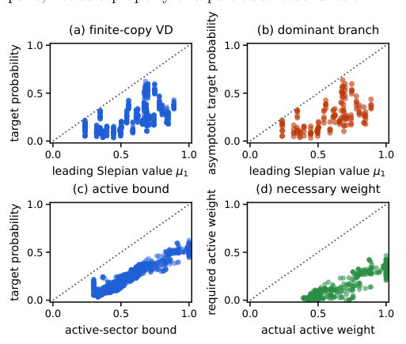
Summary. This theoretical paper establishes that virtual distillation, while useful for error mitigation, is fundamentally limited by the Slepian concentration principle when applied to variational quantum states. It derives and verifies that the maximum achievable success probability cannot exceed the leading eigenvalue of a specific Slepian operator built from the ansatz band. This provides a crucial, quantifiable constraint on the performance of near-term quantum computation protocols.
Why it may be interesting. The work provides a powerful, mathematically rigorous constraint (the Slepian bound) on the performance of quantum error mitigation techniques like virtual distillation, linking spectral properties to achievable information capacity.
Main problem. The paper investigates the fundamental limits on the success probability of virtual distillation, a near-term error-mitigation technique, when applied to variational quantum states.
Main result. Virtual distillation cannot increase the target-window probability beyond the leading eigenvalue of the Slepian concentration operator ($\mu_1(p)$) if the noisy state is confined within the variational ansatz band.
Method. The authors employ Slepian concentration theory to derive rigorous upper bounds on the achievable probability, comparing these bounds against results from finite-copy and asymptotic virtual distillation protocols.
Model / system. The analysis considers an $n$-qubit register with a noisy output density matrix $ ho$, which is distilled over $m$ copies to form $\sigma_m$. The process is constrained by a finite-band variational ansatz projector $\Pi_p$.
Key observables. The leading Slepian eigenvalue ($\mu_1(p)$), the active Slepian dimension ($D_ au(p)$), and the target-window success probability ($p_A(m)$).
Important parameters / regimes. The variational band projector ($\Pi_p$), the analysis resolution threshold ($ au$), and the number of copies ($m$).
Assumptions / limitations. The primary theorem assumes that the support of the noisy density matrix $ ho$ is entirely contained within the range of the variational band projector ($ ext{supp}( ho) \subseteq ext{Ran } \Pi_p$).
Figures summary. Figure 1 numerically verifies the Slepian bounds by comparing finite-copy and asymptotic virtual-distilled probabilities against the theoretical leading Slepian value ($\mu_1$) and the active-sector upper bound.
Paper structure. The paper establishes the problem using the density matrix formalism, introduces the Slepian operator and its associated bounds (Theorem 1), and then provides numerical verification across multiple panels comparing distillation results against the derived theoretical constraints.
Virtual distillation is a powerful near-term error-mitigation primitive, but it is also a spectral filter: it amplifies the dominant eigenvector component already present in the noisy density matrix. We show that, for a finite-band variational state, this filtering cannot create new concentration inside a set of accepted measurement outcomes. The asymptotic success probability after distillation is bounded by the leading eigenvalue of a Slepian concentration operator built from a specified variational band and that outcome window. Moreover, the number of robust high-success spectral components is limited by the Slepian active dimension. \rev{For bit-string outcome windows, an explicit Walsh-band realization has a Krawtchouk kernel on the Boolean hypercube. Finite-size noisy-QAOA calculations for 2-regular Max-Cut illustrate both the in-band improvement and the out-of-band failure modes predicted by the branch-resolved result.
Authors: Andras Molnar, Efekan Kökcü, Norbert Schuch, Bojko N. Bakalov
Type: theory · Category: strongly correlated electrons · PDF: https://arxiv.org/pdf/2608.20849v1
Analysis basis: full PDF text, analyzed in chunks
Topic relevance: analog quantum simulation 1/5
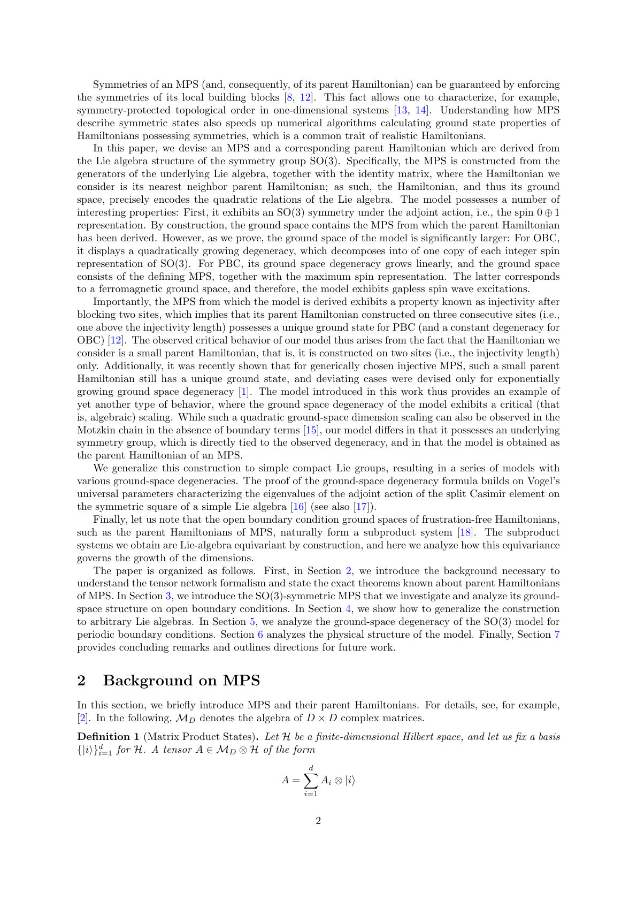
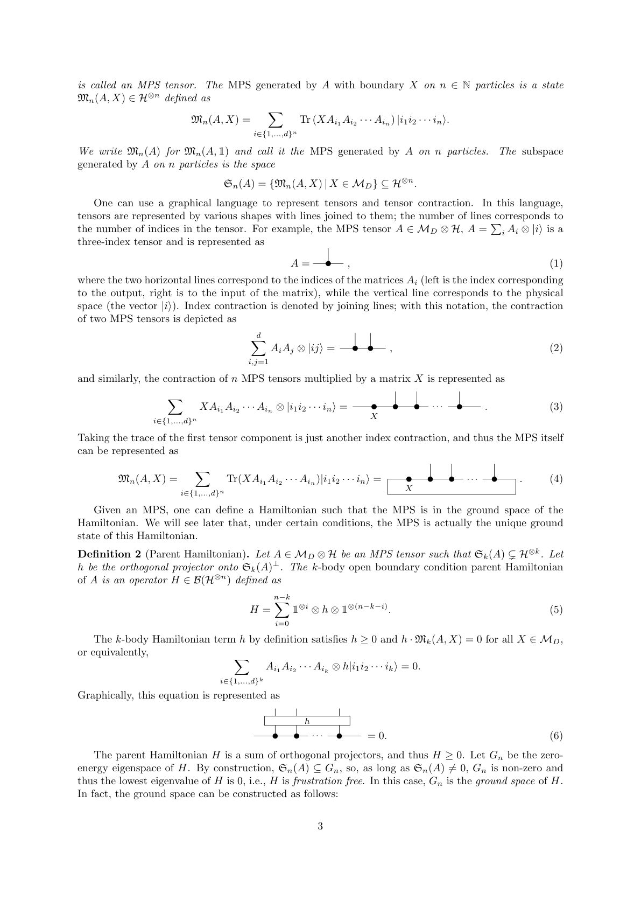
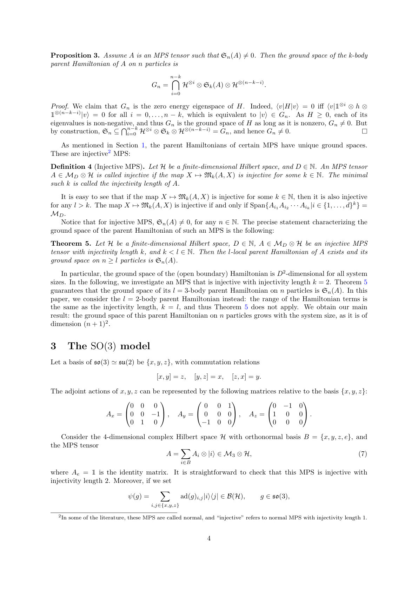
Summary. This work develops a method to study the ground state degeneracy of spin models by constructing them from the algebraic relations of Lie algebras, using Matrix Product States. For the $\mathfrak{so}(3)$ model, the authors find distinct ground state degeneracies depending on boundary conditions. This provides a novel, algebraically grounded understanding of critical quantum phases.
Why it may be interesting. The connection between algebraic structures (Lie algebras) and the ground state degeneracy of quantum spin models provides a powerful, symmetry-based tool for understanding critical behavior in strongly correlated systems.
Main problem. The paper characterizes the ground space degeneracy of spin models derived from the algebraic structure of Lie algebras, specifically $\mathfrak{so}(3)$.
Main result. The model exhibits a quadratic ground space degeneracy for open boundary conditions (OBC) and a linear degeneracy for periodic boundary conditions (PBC).
Method. The analysis uses the parent Hamiltonian derived from a Matrix Product State (MPS) built from the Lie algebra generators to determine the zero-energy eigenspace structure.
Model / system. The system is an SO(3)-symmetric spin model whose Hamiltonian is constructed to encode the quadratic relations of the $\mathfrak{so}(3)$ Lie algebra. The analysis is generalized to other compact simple Lie groups.
Key observables. Ground space degeneracy (quadratic for OBC, linear for PBC), and the presence of gapless excitations in the PBC case.
Important parameters / regimes. The boundary conditions (OBC vs. PBC) and the specific Lie algebra ($\mathfrak{so}(3)$).
Assumptions / limitations. The critical behavior is attributed to the parent Hamiltonian being a 'small' parent Hamiltonian, contrasting with generic injective MPS which usually yield unique ground states.
Paper structure. The paper progresses from defining the general framework of using MPS parent Hamiltonians to analyze ground space degeneracy, details the specific $\mathfrak{so}(3)$ case, and concludes with generalizations to $ ext{SO}(d)$ and other Lie groups.
We introduce an $\mathrm{SO}(3)$-symmetric spin model derived from the algebraic structure of $\mathfrak{so}(3)$: It is obtained as the nearest-neighbor parent Hamiltonian of a Matrix Product State (MPS) built from the generators of the Lie algebra $\mathfrak{so}(3)$ and the identity matrix, and therefore encodes the quadratic relations of the Lie algebra. We characterize the ground space structure of the resulting model and show that for open boundary conditions (OBC), it exhibits a quadratic ground space degeneracy, given by one irreducible representation (irrep) of each odd dimension (integer spin). For periodic boundary conditions (PBC), it has a linear ground space degeneracy, consisting of a singlet --- namely, the MPS underlying the model --- and a ferromagnet (the irrep with maximal spin), and thus exhibits gapless excitations. We also generalize the construction and the analysis of the OBC ground space to $\mathrm{SO}(d)$ and other compact simple Lie groups. The MPS on which the model is based is an injective MPS, and therefore, its 3-site parent Hamiltonian has a unique ground space and is gapped. The observed critical behavior thus has its origin in the small parent Hamiltonian considered. The model's algebraic ground space scaling thus provides an example distinct from that reported in (Schuch et al., 2025, arXiv:2503.10767), where it was shown that small parent Hamiltonians of injective MPS generically have unique ground states, and examples with an exponential ground space degeneracy were given.
Papers from primary archives without highlighted authors or any topic match. Click to expand.
Authors: Andrew Li, Dominic J. Williamson
Type: theory · Category: quantum information and computing · PDF: https://arxiv.org/pdf/2608.20981v1
Analysis basis: full PDF text, analyzed in chunks
Summary. This paper provides a rigorous mathematical classification of a specific class of quantum error-correcting codes (DDTI codes) in arbitrary dimensions. By utilizing tools from homological algebra, the authors prove that these codes are structurally equivalent to copies of the D-dimensional toric code. This result significantly generalizes existing knowledge in the field of topological quantum computation.
Why it may be interesting. While highly mathematical, the classification of topological quantum codes is fundamental to understanding fault-tolerant quantum computation, providing concrete structural results for realizing robust quantum memory.
Main problem. To classify D-dimensional translation-invariant quantum codes (DDTI codes) based on their underlying mathematical structure derived from length-D chain complexes.
Main result. The authors prove that such codes are equivalent to copies of D-dimensional toric codes, generalizing the known 2D classification result.
Method. The classification relies on advanced concepts from homological algebra, specifically analyzing CSS chain complexes and free resolutions of modules over the Laurent polynomial ring R = F_2[x_1, ..., x_D].
Model / system. The system is quantum error-correcting codes defined on the infinite D-dimensional hypercubic lattice (Z^D), characterized by their stabilizer structure derived from chain complexes.
Key observables. The code Hamiltonian, the dimension k of the module M (determining the number of independent charge sectors), and the equivalence class of the code structure.
Important parameters / regimes. The dimensionality D of the lattice and the code, and the length of the underlying chain complex.
Assumptions / limitations. The classification is restricted to DDTI codes derived from length-D chain complexes, excluding fractal codes. The result holds up to finite coarse-graining and local unitaries.
Figures summary. Figure 1 illustrates the main result: any DDTI qLDPC code based on a length-D chain complex satisfying the theorem is equivalent to copies of D-dimensional toric codes (TC).
Paper structure. The paper establishes the mathematical framework using homological algebra (resolutions, chain complexes) to prove structural theorems (e.g., equivalence of resolutions) which are then applied to classify the physical quantum codes.
Quantum error-correcting codes with two-dimensional translation invariance are known to be equivalent to copies of the two-dimensional toric code. Such a simple classification is not possible for quantum codes with higher dimensional translation invariance due to the existence of multiple types of toric codes and infinite families of fracton codes. Here, we focus on D-dimensional translation-invariant quantum codes based on length-D chain complexes. This includes multivariate multicycle codes where the number of variables equals the number of cycles. We show that such codes are equivalent to copies of D-dimensional toric codes. This directly generalizes the classification result for two-dimensional translation-invariant codes.
Authors: Yingrong Chen, Nathan A. Baker, Rushi Gong, Conrad S. N. Johnston, Brad Lackey, Hongbin Liu, Sasha Schmidt, Yuan Su, David B. Williams-Young, Yinuo Yang
Type: theory · Category: quantum information and computing · PDF: https://arxiv.org/pdf/2608.20593v1
Analysis basis: full PDF text, analyzed in chunks
Summary. This paper introduces a novel, Clifford-efficient method for preparing sparse quantum states representing molecular wavefunctions. It achieves this by leveraging the affine structure of the configuration bitstrings through classical matrix compression techniques like Gaussian elimination. The result is a quantum circuit that minimizes ancillary qubits, making the simulation of complex quantum chemistry problems more resource-efficient for quantum hardware.
Why it may be interesting. This work provides a concrete, resource-aware quantum circuit synthesis technique for simulating complex quantum chemistry problems, directly impacting the feasibility of running quantum algorithms on near-term hardware.
Main problem. The paper addresses the challenge of efficiently preparing quantum states that are superpositions of only a small fraction of the total basis states (sparse states) on a large number of qubits.
Main result. The proposed method achieves state preparation with minimal ancillary qubits by exploiting affine relationships in the configuration bitstrings, leading to significant Clifford-only compression.
Method. It uses a two-stage classical compression process—Gaussian elimination over GF(2) followed by optional binary encoding—to reduce the required dense register size before constructing the quantum circuit.
Model / system. The model is the quantum state $|\psi angle$ representing molecular wavefunctions, which are sparse superpositions of basis states derived from methods like selected configuration interaction (sCI).
Key observables. Ancillary qubit count, non-Clifford gate count, and Clifford gate count are the primary metrics used for comparison.
Important parameters / regimes. The sparsity ($d \ll 2^n$) and the rank ($r$) of the configuration matrix are crucial parameters determining the efficiency.
Assumptions / limitations. The method assumes the target state can be represented by a configuration matrix $M \in ext{GF}(2)^{n imes d}$ and that the low rank condition ($r \ll n$) holds for chemically relevant states.
Figures summary. Figures illustrate the steps of Gaussian elimination and binary encoding on molecular configuration matrices (e.g., for F2), and later show the resulting quantum circuits and resource estimates for state preparation.
Paper structure. The paper details the theoretical framework by first introducing the problem, then presenting the two-stage classical compression (Gaussian elimination $ ightarrow$ Binary Encoding), followed by the construction of the quantum circuit, and finally benchmarking the resource costs against prior methods.
Sparse quantum state preparation concerns an $n$-qubit target state that is a superposition of only $d \ll 2^n$ computational basis states. Existing approaches exploit this sparsity by compressing these $d$ basis states and their amplitudes onto a smaller set of qubits, called the dense register, before expanding the prepared state to the full register. Rather than relying on the permutation-based compression used in prior work, we exploit affine relationships among the binary configurations over the finite field $\operatorname{GF}(2)$ to reduce both the non-Clifford gate count and the ancillary qubit count. Invertible affine transformations over $\operatorname{GF}(2)$, comprising Gaussian elimination and all-ones-row removal, first reduce the dense register from $n$ to the rank $r$ using only Clifford gates and no ancillary qubits. An optional binary encoding stage then trades additional Toffoli gates and ancillary qubits for further compression to the minimum $\lceil\log_2 d\rceil$ dense qubits needed to represent $d$ distinct configurations. For chemically relevant wavefunctions, such as those obtained from selected configuration interaction calculations, shared electronic excitation patterns produce many of these affine relationships, enabling substantial Clifford-only compression before binary encoding. Across the molecular benchmarks, our method requires the fewest ancillary qubits among the evaluated sparse state preparation methods while maintaining comparable non-Clifford gate counts when using binary encoding.
Authors: Se-Wan Ji
Type: theory · Category: quantum information and computing · PDF: https://arxiv.org/pdf/2608.20726v1
Analysis basis: full PDF text, analyzed in chunks
Summary. This theoretical paper calculates the exact capacity of quantum channels modeled by Difference-Set Weyl Channels. It achieves this by linking the channel's structure to algebraic properties derived from cyclic difference sets, establishing precise bounds for both classical and entanglement-assisted communication rates. The work provides deep insights into the interplay between noise structure, entanglement, and information capacity.
Why it may be interesting. The rigorous characterization of channel capacity using algebraic structures like difference sets provides powerful tools for understanding fundamental limits in quantum communication, which is highly relevant to quantum information theory.
Main problem. The paper aims to determine the exact capacity of quantum channels, specifically focusing on the relationship between classical capacity, entanglement assistance, and the structure of the underlying noise model (Weyl channels).
Main result. For specific noise models based on cyclic difference sets, the unrestricted capacity is found to be $C = \log_2(D/r)$, and the analysis establishes a finite-block strong converse.
Method. The authors use subsystem-resolved Weyl decomposition, design theory (cyclic difference sets) to saturate known bounds, and analyze entanglement measures like the Choi state's partial transpose property.
Model / system. The system models quantum channels acting on a local Hilbert space $\mathcal{H}_D$ of odd dimension $D \ge 3$, represented using the discrete Wigner function formalism (Weyl channels).
Key observables. Unrestricted capacity ($C$), entanglement-assisted capacity ($C_E$), collision entropy ($S_{\alpha, \min}$), and the state's partial transpose property (NPT).
Important parameters / regimes. The local dimension $D$ (odd, $D \ge 3$), the size of the difference set $r$, and interpolation parameters $\epsilon$ and $\eta$.
Assumptions / limitations. The analysis is restricted to odd local dimensions $D \ge 3$, and the exact capacity results are conditional on the existence of suitable cyclic difference sets.
Figures summary. The notes mention diagnostic tests (Table 2) for small cyclic difference sets, comparing crossover values related to entropy and capacity bounds.
Paper structure. The paper develops from general capacity definitions to specific structural results by using design theory (cyclic difference sets) to saturate known bounds, leading to precise characterizations across various noise interpolation parameters ($\epsilon$ and $\eta$).
In odd local dimension $D$, complete Wigner positivity yields stochastic phase-space dynamics on Wigner-nonnegative states but does not control signed inputs, entanglement across channel uses, or collective decoding. Using a subsystem-resolved Weyl decomposition, we characterize the equality conditions of the tensor-stable output-purity bound. Cyclic difference sets are precisely the uniform shift supports saturating the universal Parseval lower bound on the worst nontrivial collision mode. For factorized shift--phase noise with shift support $R$, $|R|=r$, and phase distribution $h$ of no larger collision radius, we obtain $S_{α,\min}(Φ_{R,h}^{\otimes n})=n\log_2 r$ for all $n\ge1$ and $0\leα\le2$, the unrestricted capacity $C=\log_2(D/r)$, and a finite-blocklength strong converse. For a balanced bi-difference-set interpolation $h_\varepsilon=(1-\varepsilon)q_H+\varepsilon u_D$, the unassisted capacity is constant for $0\le\varepsilon\le1$, while the Choi state is NPT for every $\varepsilon<1$ and becomes entanglement breaking at $\varepsilon=1$. At $\varepsilon=0$, all tensor-power minimum-output states are products with local factors in one of two mutually unbiased Weyl bases; for $\varepsilon>0$, only the computational basis remains. For Singer parameters $D=q^2+q+1$ and $r=q+1$, $C_{\mathrm E}/C\to2-\varepsilon$. Finally, for an identity--dephasing profile we determine the exact tensor-power collision-entropy phase diagram, derive rigorous capacity bounds, and isolate a distinct von Neumann crossover, with a tensor-power R'enyi conjecture supported by numerics. Thus complete Wigner positivity can coexist with persistent channel entanglement and a scalable entanglement-assisted advantage.
Authors: Xiaoyi Zheng, Lin Chen, Chan-Tong Lam
Type: both · Category: quantum information and computing · PDF: https://arxiv.org/pdf/2608.21166v1
Analysis basis: full PDF text, analyzed in chunks
Summary. This paper introduces a novel, algebraically grounded method to synthesize arbitrary graph states in quantum networks by framing the process as a rank-2 reduction over GF(2). By mapping this to a dual-star concurrent distribution on a physical network model, the authors demonstrate a protocol that significantly reduces resource overhead and time-slot depth compared to existing edge-by-edge constructions, especially for dense target graphs.
Why it may be interesting. This work provides a concrete, resource-aware protocol for preparing complex quantum states in realistic network models, directly impacting the feasibility of large-scale quantum computation architectures.
Main problem. Existing methods for synthesizing graph states in quantum networks suffer from resource overhead that scales poorly with the edge density of the target graph.
Main result. The proposed rank-2 reduction method achieves a step count upper-bounded by floor(N/2), independent of edge density, and outperforms existing baselines in time-slot depth and resource overhead for dense graphs.
Method. The synthesis problem is reformulated as a rank-2 reduction process of a difference matrix over GF(2), which is physically mapped to a dual-star concurrent entanglement distribution.
Model / system. The work models quantum networks using Waxman physical topologies with fiber attenuation, simulating the process using a time-slot model.
Key observables. Time-slot depth, entanglement resource overhead (CZ gates, Pauli measurements), and total number of steps.
Important parameters / regimes. Edge density (p), number of nodes (N), and the physical attenuation parameters of the network.
Assumptions / limitations. The protocol assumes the equivalence between joint Pauli-X measurements and graph pivot operations, and the time-slot model assumes classical information transfer within one slot.
Figures summary. Figures compare the performance of the proposed protocol against a strengthened Steiner baseline across varying edge densities (p), showing the divergence in step count and total depth, and the crossover point where the proposed method surpasses the baseline in resource overhead.
Paper structure. The paper reviews graph state theory and its GF(2) representation, establishes the rank-2 synthesis framework, details the physical mapping and heuristic algorithm, and concludes with Monte Carlo numerical results comparing performance metrics.
Existing schemes for synthesizing graph states in quantum networks are essentially edge-by-edge constructions, so quantities such as the time-slot depth and the resource overhead grow significantly with the edge density of the target graph. This paper proposes a new method. Exploiting the mathematical equivalence between joint Pauli-X measurements and graph pivot operations, we formulate graph state synthesis as a rank-2 reduction process of a difference matrix over GF(2), and give an upper bound floor(N/2) on the number of steps for synthesizing an arbitrary N-node graph state, independent of the edge density of the target graph state. At the physical level, the joint Pauli-X measurement of each step is mapped to a dual-star concurrent distribution. We model the protocol on Waxman physical topologies with fiber attenuation and give a heuristic algorithm, and evaluate it against a strengthened Steiner baseline through Monte Carlo experiments. The experimental results show that our protocol is superior in time-slot depth almost everywhere. The entanglement resource overhead, the total number of CZ gates, and the number of Pauli measurements drop below the baseline near edge density p approximately 0.3, and are superior across the board thereafter. The denser the target graph state, the more significant the advantage.
Authors: Taejoon Park, Erik Alfredo Perez, Shimin Zhang, Yuan Ping, Hosung Seo
Type: theory · Category: quantum information and computing · PDF: https://arxiv.org/pdf/2608.20837v1
Analysis basis: full PDF text, analyzed in chunks
Summary. This paper theoretically designs and characterizes main-group donor-acceptor (DA) pairs within ZnO to serve as optically active quantum defects. Using advanced DFT calculations, the authors predict that these specific dimer defects exhibit desirable properties, such as isolated defect states and visible optical transitions. This work provides a chemically guided pathway for engineering solid-state qubits in ZnO.
Why it may be interesting. This work directly addresses the search for solid-state quantum emitters in wide-bandgap semiconductors, which is a core area for solid-state quantum information processing.
Main problem. The primary goal is to identify and characterize main-group donor-acceptor (DA) pairs in ZnO as promising candidates for optically active quantum defects.
Main result. The study proposes a new family of main-group DA defects in ZnO, with specific candidates like (SiZn-BO)+ and (GeZn-BO)+ showing visible optical transitions and robust charge states.
Method. The research employs hybrid density functional theory (DFT) to systematically investigate the electronic structure, thermodynamic stability, and optical properties of these defect complexes.
Model / system. The physical system is Zinc Oxide (ZnO) hosting double substitutional impurities formed by main-group donor-acceptor (DA) pairs ($ ext{XZn-YO}$). The analysis covers defect level diagrams, formation energies, and optical transitions.
Key observables. Zero-Phonon Lines (ZPLs), radiative lifetimes, nonradiative decay rates, defect electronic structure, and thermodynamic formation energies.
Important parameters / regimes. The defect electronic structure is shown to be largely determined by the atomic properties of the constituent atoms, providing a chemical design principle.
Assumptions / limitations. The analysis relies on DFT calculations, and the study establishes a new family of candidates based on these theoretical predictions.
Figures summary. Figures illustrate the schematic configurations of the investigated dimer defects ($ ext{XZn-YO}$) and present spin-polarized defect-level diagrams for various charge states, showing orbital contributions.
Paper structure. The paper systematically investigates the defect physics by calculating electronic structure, stability, and optical properties for the proposed DA dimers, culminating in the identification of promising candidates.
Zinc oxide (ZnO), a wide-band-gap semiconductor with mature growth techniques, is a promising host for optically active quantum spins. Yet, optically active quantum defects in ZnO remain largely unexplored. Here, we identify and characterize a family of double substitutional impurities in ZnO, formed by main-group donor-acceptor (DA) pairs, as candidates for optically active quantum defects. Using hybrid density functional theory (DFT), we systematically investigate double substitutional DA complexes and their defect physics, including electronic structure, thermodynamic stability, and optical properties. The proposed defects exhibit isolated defect states, strong spin localization on the acceptor site, and $C_{3v}$ symmetry. Importantly, the electronic structure of the DA pairs is largely determined by the atomic properties of their constituent atoms. We further examine their optical characteristics, including zero-phonon lines (ZPLs), radiative lifetimes, and nonradiative decay to assess their viability as color centers. Notably, among the dimers, (Si$_{Zn}$-B$_O$)$^+$ and (Ge$_{Zn}$-B$_O$)$^+$ exhibit visible optical transitions with sub-microsecond radiative lifetimes and robust charge states against optical ionization, while (Si$_{Zn}$-C$_O$)$^{2+}$ shows the smallest Huang-Rhys factor, approximately 5.6. Our results propose a new family of main-group donor-acceptor defects in ZnO as promising candidates for optically active spin defects.
Authors: Tanay Kibe, Pratik Roy
Type: theory · Category: quantum information and computing · PDF: https://arxiv.org/pdf/2608.21214v1
Analysis basis: full PDF text, analyzed in chunks
Summary. This theoretical paper develops integral representations for generalized Rényi divergences on abstract von Neumann algebras. It achieves this by relating these divergences to integrals of the standard relative entropy using advanced tools from non-commutative functional analysis. The result provides a unified mathematical framework for quantifying quantum distinguishability in highly general quantum systems.
Why it may be interesting. The deep mathematical machinery connecting divergences to integrals over relative entropy is highly relevant for understanding quantum channel capacities and resource theories in open quantum systems.
Main problem. The paper aims to derive integral representations for sandwiched and $\alpha$-$z$ Rényi divergences when defined on general von Neumann algebras.
Main result. It establishes that these divergences can be represented as integrals over ordinary relative entropies, providing a powerful mathematical tool for analyzing quantum distinguishability.
Method. The derivation employs advanced functional analysis tools, specifically Haagerup non-commutative $L^p$ spaces, interpolation, and fixed-ray constructions.
Model / system. The theory is formulated for normal states on arbitrary von Neumann algebras, generalizing concepts from finite-dimensional quantum information theory.
Key observables. Sandwiched and $\alpha$-$z$ Rényi divergences ($D_{\alpha,z}(\rho\|\sigma)$), and the ordinary relative entropy $D(\cdot\|\cdot)$.
Important parameters / regimes. The Rényi order $\alpha$, the parameter $z$, and the support inclusion condition between the states $\rho$ and $\sigma$.
Assumptions / limitations. The primary assumption for the general case is the support inclusion condition ($ ext{s}(\rho) \le \text{s}(\sigma)$), though boundary terms are derived for when this fails.
Paper structure. The paper builds from establishing the integral representation for finite dimensions, extending it to general von Neumann algebras using $L^p$ spaces, and finally detailing the fixed-ray construction to prove the general identity and analyze boundary corrections.
We represent sandwiched and $α$-$z$ Rényi divergences as averages of ordinary relative entropy. The $α$-$z$ Rényi divergence is shown to be an integral over the relative entropy of a canonical family of fixed-ray escort states along the ray $z=cα$. We prove this representation for normal states on an arbitrary von Neumann algebra, using Haagerup non-commutative $L^p$ spaces and interpolation. The formula holds for every $z>0$: for $0<α<1$ it holds when the support of the first state is contained in that of the reference state, and for $α>1$ it holds whenever the divergence is finite. When the lower-order support condition fails, we identify the exact fixed-ray support-boundary term. The representation yields a monotone escort profile and a convex order potential. We use these to reformulate one-shot testing converses, exact sandwiched strong-converse exponents, and work-extraction reliability as signed-area or level-crossing statements, and discuss a restricted two-parameter pair-conversion rate.
Authors: Amulya Mohan, Christino Tamon, Yichi Xu, Hanmeng Zhan
Type: theory · Category: other · PDF: https://arxiv.org/pdf/2608.20739v1
Analysis basis: full PDF text, analyzed in chunks
Summary. This paper develops tools to quantify the 'laziness' of quantum walks on graphs by analyzing the trace of the average mixing matrix. It proves that graph structure dictates this invariant, establishing that the complete graph is the laziest connected graph and that the star graph is the laziest tree. The work is significant for understanding how graph topology governs long-term quantum dynamics.
Why it may be interesting. The concept of 'laziness' provides a novel graph invariant derived from quantum dynamics, linking spectral properties (Laplacian eigenvalues) directly to physical return probabilities, which is relevant for understanding quantum transport in structured media.
Main problem. The paper studies the 'laziness' of a graph, defined as the trace of the average mixing matrix of a quantum walk, which quantifies the long-term probability of a quantum walker returning to its starting point.
Main result. It establishes a hierarchy of laziness for graphs, showing that the complete graph $K_n$ is the laziest connected graph, and the star graph $S_n$ is the laziest tree on $n$ vertices.
Method. The analysis uses spectral graph theory, specifically examining the average mixing matrix $\mathcal{M}$ derived from the Laplacian quantum walk, and applying various algebraic tools like Schur products and spectral decomposition.
Model / system. The model is quantum walks evolving on an arbitrary graph $X$, governed by the Laplacian matrix $L$. The key diagnostic is the average mixing matrix $\mathcal{M} = \lim_{T o\infty} rac{1}{T} \sum_{t=0}^{T} U(t) \circ U(t)$.
Key observables. Laziness, defined as $ ext{tr}(\mathcal{M})$, and the average mixing matrix $\mathcal{M}$.
Important parameters / regimes. The number of vertices $n$, and the specific structure of the graph (e.g., $K_n$, $S_n$, double stars $ ext{DS}(\ell, r)$).
Assumptions / limitations. The analysis assumes the existence of the Cesaro limit for the average mixing matrix and relies heavily on spectral properties of the Laplacian matrix.
Figures summary. Not specified.
Paper structure. The paper systematically develops tools (properties of laziness) to prove the hierarchy of laziness for specific graph families, comparing structures like $K_n$, $S_n$, and various multipartite graphs.
The trace of the average mixing matrix of a quantum walk measures the "laziness" of the walk: the higher the trace, the more likely that the walker returns home in the long run. In this paper, we develop tools to study this graph invariant arising from Laplacian quantum walks. It is known that the complete graph $K_n$ is the laziest connected graph on $n$ vertices. Using our machinery, we show that the star $S_n$ is the second laziest connected graph on $n$ vertices (and hence the laziest tree on $n$ vertices), the complete multipartite graph $K_{n-2,1,1}$ is the third laziest connected graph on $n$ vertices, and the double star $DS(n-3,1)$ is the second laziest tree on $n$ vertices. We also show that on the same number of vertices, more unbalanced double stars are lazier.
← Index · ← Previous · Next →